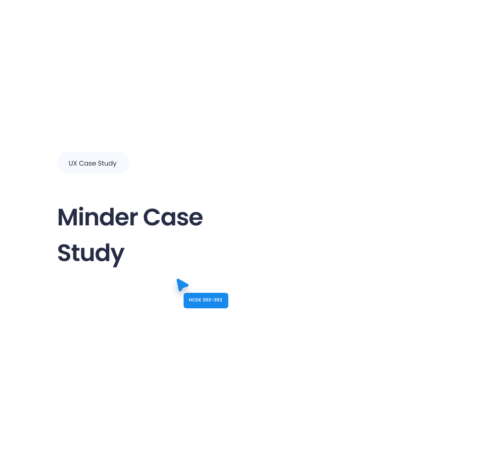

Helping students feel connected.
Students weren't avoiding study groups—they were avoiding uncertainty. Minder helps them coordinate study sessions with clarity and confidence.

I study why people behave the way they do, and design products and experiences that help everyday moments feel clearer, calmer, and more intentional. My work lives at the intersection of UX research, product strategy, and interaction design.
Helping students feel connected.
Students weren't avoiding study groups—they were avoiding uncertainty. Minder helps them coordinate study sessions with clarity and confidence.

Helping households become more mindful of water usage.
Most people want to conserve water but lack visibility into daily use. Glow Tap makes consumption tangible, turning awareness into everyday action.

Helping makers feel like they belong.
Creative communities thrive when people feel seen. MakeLab reimagines how makers discover peers, share work, and grow together.

Helping people create intentional routines.
Daily habits form in small moments. Ritual explores how gentle structure and thoughtful feedback can help people build routines that actually stick.